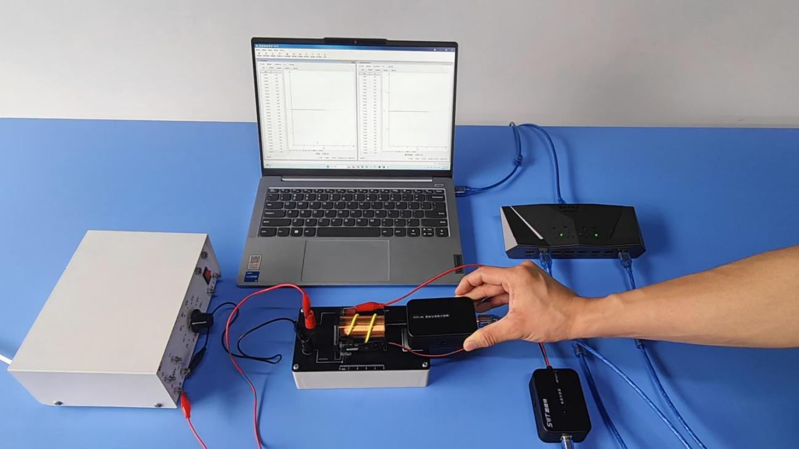
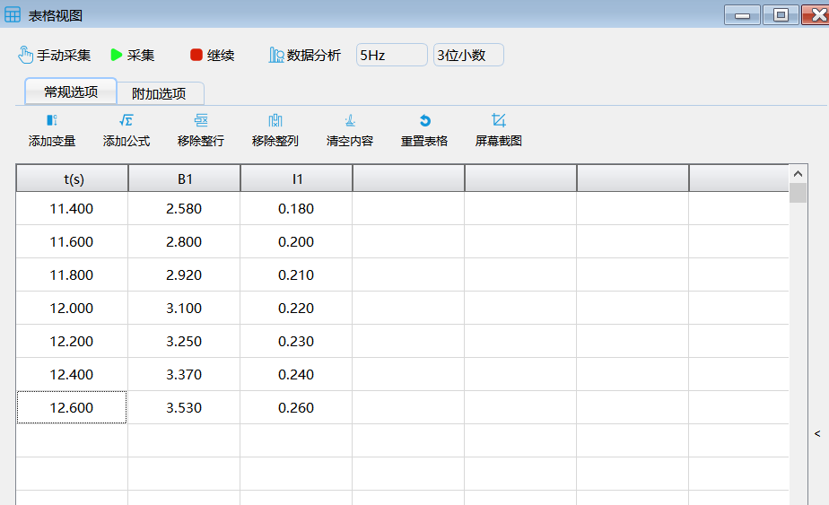
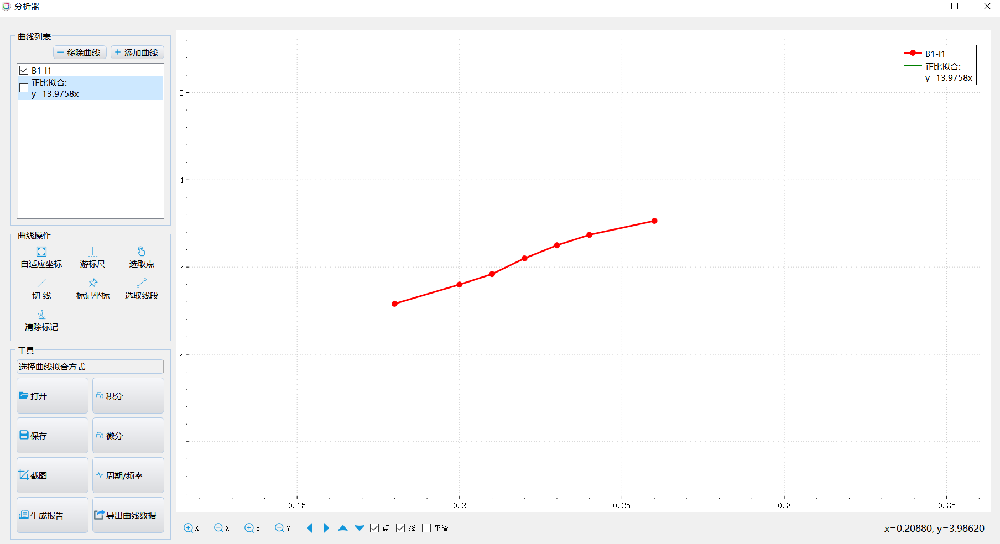
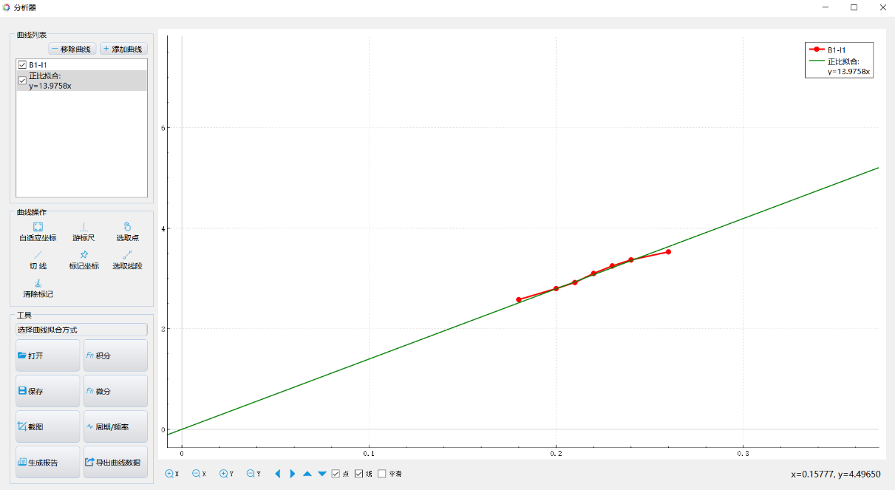

实验四十六 通电螺线管磁感应强度与电流关系
【实验目的】
验证通电螺线管的磁感应强度与电流成正比的关系。
【实验原理】
通电螺线管内部的磁场线是闭合的，其磁感应强度与电流成正比。
【实验器材】
数据采集器、电流传感器、磁感应强度传感器、螺线管、计算机、智能电源等。
【实验装置】

【实验操作步骤】
1.搭建好实验环境，将电流传感器与滑动变阻器、匀强磁场螺线管串联后接入学生电源直流挡；然后将磁感应强度传感器探管插入螺线管适当的深度后固定；
2.打开实验数据分析软件，连接好数据采集器和电流传感器及磁感应强度传感器；
3.打开“表格视图”，闭合电路电源开关，调节滑动变阻器的触片以改变通过螺线管的电流，点击“手动采集”，记录一定数据后点击“数据分析”；
4. 做出“磁感应强度－电流”曲线，观察发现磁感应强度与电流大小成正比关系。

实验数据

磁感应强度与电流大小关系曲线

正比拟合
【注意事项】
接入电路的电源电压不能太大，以免烧坏螺线管和电流传感器。实验时最好在电路中串联一个定值电阻以保护电流传感器。